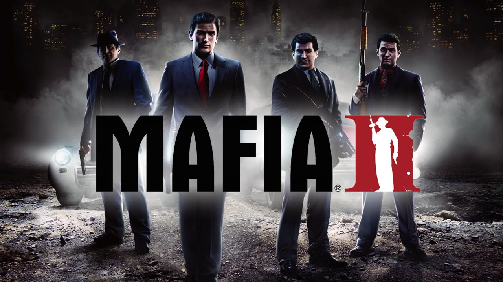

Mafia 2

PLATFORMY
PC
X360
PS3
------

Wiecej Zdj.
Pełnoprawna kontynuacja popularnej gry gangsterskiej Mafia z 2002 roku. Za jej powstanie odpowiadają znani także z Hidden & Dangerous czy Vietcong twórcy oryginału, działający obecnie pod skrzydłami koncernu 2K Games.
Za powstanie gry odpowiedzialna jest ta sama ekipa deweloperska, która w 2008 roku po przejęciu przez koncern Take-Two Interactive funkcjonuje pod nową nazwą 2K Czech. Poza obiema odsłonami serii Mafia, zespół ów ma na swoim koncie także dwa znane cykle taktycznych strzelanin Hidden and Dangerous oraz Vietcong. Jednym z elementów łączących obie części Mafii jest postać głównego bohatera „jedynki” Thomasa Angelo, który w epilogu gry zostaje zastrzelony przed swym domem podczas podlewania trawnika. W jednym z rodziałów Mafii II dowiadujemy się, że zabójcami Angelo są Vito Scaletta oraz Joe Barbaro (bohaterowie „dwójki”). W obu grach spotkać możemy niemal identyczną cut-scenkę, w której zamachowcy podjeżdżają pod dom ofiary tym samym, czerwonym samochodem. Innym nawiązaniem jest także fakt, że podczas wczytywania misji w Mafii II możemy poczytać zeznania Tommy’ego Angelo, będące podstawą fabuły pierwszej części.
FABUŁA
Pod względem opowiedzianej historii Mafia II zachowuje ciąg fabularny z pierwszą odsłoną cyklu (m.in. liczne smaczki i nawiązania), jednak tym razem akcja toczy się kilkanaście lat po opisanych tam wydarzeniach (przełom lat 40. i 50.), a podczas zabawy przejmujemy kontrolę nad zupełnie nowym bohaterem. W grze wcielamy się bowiem w postać niejakiego Vittorio Scalettiego, który w 1945 roku kończy służbę wojskową i powraca do rodzinnego miasta Empire Bay. Wraz z dawnym przyjacielem Joe Barbaro, nasz protagonista próbuje odnaleźć się w nowej rzeczywistości, w której szczytem marzeń jest stabilna praca za głodową pensję w pobliskich dokach. Nasz bohater nie zamierza jednak iść w ślady swoich rówieśników i pragnąc zapewnić sobie godziwe życie powoli wkracza na drogę przestępstwa, aby wraz z postępami gry stać się pełnoprawnym członkiem wpływowej, lokalnej rodziny mafijnej.
Pod względem opowiedzianej historii Mafia II zachowuje ciąg fabularny z pierwszą odsłoną cyklu (m.in. liczne smaczki i nawiązania), jednak tym razem akcja toczy się kilkanaście lat po opisanych tam wydarzeniach (przełom lat 40. i 50.), a podczas zabawy przejmujemy kontrolę nad zupełnie nowym bohaterem. W grze wcielamy się bowiem w postać niejakiego Vittorio Scalettiego, który w 1945 roku kończy służbę wojskową i powraca do rodzinnego miasta Empire Bay. Wraz z dawnym przyjacielem Joe Barbaro, nasz protagonista próbuje odnaleźć się w nowej rzeczywistości, w której szczytem marzeń jest stabilna praca za głodową pensję w pobliskich dokach. Nasz bohater nie zamierza jednak iść w ślady swoich rówieśników i pragnąc zapewnić sobie godziwe życie powoli wkracza na drogę przestępstwa, aby wraz z postępami gry stać się pełnoprawnym członkiem wpływowej, lokalnej rodziny mafijnej.
MECHANIKA
Mechanika rozgrywki w grze Mafia II stanowi niemal we wszystkich aspektach rozwinięcie pomysłów, zastosowanych w wydanej osiem lat wcześniej poprzedniczce. Miejscem akcji jest tu więc ponownie liczące sobie ok. 10 mil kwadratowych miasto o otwartej strukturze – monumentalne Empire Bay, będące w rzeczywistości dość luźną, wirtualną adaptacją Nowego Jorku (w grze spotykamy m.in. tak charakterystyczne budowle, jak Empire State Building czy most Brooklyński). Miasto podzielone jest na kilka odmiennych dzielnic, wśród których znalazły się m.in. Małe Włochy, Chinatown, dzielnica przemysłowa czy portowa, dzielnica bogaczy, a także slumsy). Podobnie jak w pierwowzorze, oś rozgrywki stanowi dość liniowy wątek fabularny, którego ukończenie powinno zająć w sumie ok. 10-15 godzin. Kolejne zadania są dość zróżnicowane, oferując m.in. efektowne potyczki z członkami konkurencyjnych rodzin mafijnych, przejażdżki samochodowe, podczas których musimy kogoś śledzić lub uciekać policji, a nawet wyzwania polegające na konieczności działania z ukrycia. Gracz nie jest jednak zmuszany do podążania ścieżką fabuły i w toku rozgrywki może poświęcić się także licznym wątkom pobocznym i aktywnościom dodatkowym. W porównaniu do pierwszej odsłony serii, Mafia II oferuje jednak znacznie większą swobodę działania oraz możliwość niczym nieskrępowanej eksploracji otaczającego nas miasta, które żyje własnym życiem i kusi sporą ilością nie do końca zgodnych z prawem atrakcji. Podczas zabawy możemy więc kraść pojazdy (poprzez zbicie szyby lub nieco bardziej subtelnie), wybierając z ponad 50 modeli wzorowanych na prawdziwych markach, a następnie ulepszać i modyfikować je w warsztacie. Na terenie Empire Bay spotkamy także masę sklepów, w których możemy zakupić ubrania, posilić się bądź zdobyć nową broń.
Mechanika rozgrywki w grze Mafia II stanowi niemal we wszystkich aspektach rozwinięcie pomysłów, zastosowanych w wydanej osiem lat wcześniej poprzedniczce. Miejscem akcji jest tu więc ponownie liczące sobie ok. 10 mil kwadratowych miasto o otwartej strukturze – monumentalne Empire Bay, będące w rzeczywistości dość luźną, wirtualną adaptacją Nowego Jorku (w grze spotykamy m.in. tak charakterystyczne budowle, jak Empire State Building czy most Brooklyński). Miasto podzielone jest na kilka odmiennych dzielnic, wśród których znalazły się m.in. Małe Włochy, Chinatown, dzielnica przemysłowa czy portowa, dzielnica bogaczy, a także slumsy). Podobnie jak w pierwowzorze, oś rozgrywki stanowi dość liniowy wątek fabularny, którego ukończenie powinno zająć w sumie ok. 10-15 godzin. Kolejne zadania są dość zróżnicowane, oferując m.in. efektowne potyczki z członkami konkurencyjnych rodzin mafijnych, przejażdżki samochodowe, podczas których musimy kogoś śledzić lub uciekać policji, a nawet wyzwania polegające na konieczności działania z ukrycia. Gracz nie jest jednak zmuszany do podążania ścieżką fabuły i w toku rozgrywki może poświęcić się także licznym wątkom pobocznym i aktywnościom dodatkowym. W porównaniu do pierwszej odsłony serii, Mafia II oferuje jednak znacznie większą swobodę działania oraz możliwość niczym nieskrępowanej eksploracji otaczającego nas miasta, które żyje własnym życiem i kusi sporą ilością nie do końca zgodnych z prawem atrakcji. Podczas zabawy możemy więc kraść pojazdy (poprzez zbicie szyby lub nieco bardziej subtelnie), wybierając z ponad 50 modeli wzorowanych na prawdziwych markach, a następnie ulepszać i modyfikować je w warsztacie. Na terenie Empire Bay spotkamy także masę sklepów, w których możemy zakupić ubrania, posilić się bądź zdobyć nową broń.
WYMAGANIA
Minimalne:
Brak Informacji.
Rekomendowane:
Pentium D 3 GHz, 1,5 GB RAM, karta grafiki 256 MB (GeForce 8600 lub lepsza), 6 GB HDD, Windows XP/Vista/7
Pentium D 3 GHz, 1,5 GB RAM, karta grafiki 256 MB (GeForce 8600 lub lepsza), 6 GB HDD, Windows XP/Vista/7
Minimalne:
Brak Informacji.
PEGI


Język Gry

PL napisy, EN napisy i dialogi